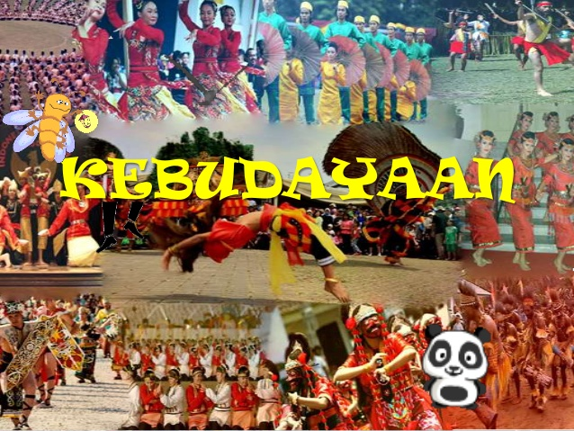

<!DOCTYPE HTML>
<html>
<head>
  <title>Motivasi Hidup</title>
  <link rel="stylesheet" href="style.css" />
  <link rel="stylesheet" type="text/css" href="css/font-awesome.css">
</head>
</html>
<body>
  <div id="wrapper">
    <div id="header">
    <form class="input">
        <p><i class="fa fa-search" aria-hidden="true"></i> Search</p>
        <input type="text" name="search">
      </form>
      
      <ul id="menu-utama">
        <li><a href="index.html"><i class="fa fa-home icon-menu" aria-hidden="true"></i> Home</a></li>
        <li><a href="artikel.html"><i class="fa fa-book"></i> Artikel</a></li>
        <li><a href="service.html"><i class="fa fa-wrench" aria-hidden="true"></i> Service</a></li>
        <li><a href="about.html"><i class="fa fa-users" aria-hidden="true"></i> About Us</a></li>
        <li><a href="contactus.html"><i class="fa fa-phone-square" aria-hidden="true"></i> Contact Us</a></li>
      </ul>
      
    </div><!---penutup div header--->
    <div id="daftar-artikel">
      <div class="artikel">
        
        <h1>Batik Asli Indonesia</h1>
        <b>November 02, 2017</b><b>views : 3,487,497</b>
        <p>	Batik adalah kerajinan yang memiliki nilai seni tinggi dan telahmenjadi bagian dari budaya Indonesia (khususnya Jawa). Yang merupakanwarisan nenek moyang bangsa Indonesia sejak dahulu kala. Sejarah pembatikan di Indonesia berkaitan dengan perkembangan kerajaanMajapahit dan kerajaan sesudahnya. Dalam beberapa catatan perkembangan batik banyak dilakukan pada masa-masa kerajaanMataram, kemudian pada kerajaan Solo dan Yogyakarta.Tradisi membatik pada mulanya merupakan tradisi turun menurun, sehingga kadang kalasuatu motif dapat dikenali berasal dari batik keluarga tertentu.

Beberapa motif batik dapatmenunjukkan status seseorang. Bahkan sampai saat ini beberapa motif batik tradisional hanya dipakaioleh keluarga keraton Yogyakarta dan Surakarta.Jenis dan corak batik tradisional tergolong amat banyak, namun corak dan variasinya sesuaidengan filosofi dan budaya masing-masing daerah yang amat beragam. Khasanah budaya bangsaIndonesia yang demikian kaya telah mendorong lahirnya berbagai corak dan jenis batik tradisionaldengan ciri kekhususannya sendiri.Perempuan-perempuan Jawa dimasa lampau menjadikan keterampilan mereka dalammembatik sebagai mata pencaharian sehingga dimasa lalu pekerjaan membatik adalah pekerjaaneksklusif perempuan.Semenjak industrialisasi dan globalisasi, yang memperkenalkan teknik otomatisasi, batik  jenis baru muncul dikenal sebagai batik cap atau batik cetak sementara batik tradisional yangdiproduksi dengan tulisan tangan menggunakan canting dan malam disebut batik tulis.

Jadi menurut teknik:
• Batik tulis adalah kain yang dihias dengan tekstur dan corak batik menggunakantangan. Pembuatan batik jenis ini memakan waktu kurang lebih 2-3 bulan.
• Batik cap adalah kain yang dihias dengan tekstur dan corak batik yang dibentuk dengan cap (biasanya terbuat dari tembaga). Proses pembuatan batik jenis ini membutuhkan waktukurang lebih 2-3 hari.

Dalam perkembangannya lambat laun kesenian batik ini ditiru oleh rakyat terdekat danselanjutnya meluas menjadi pekerjaan kaum wanita dalam rumah tangganya rumah tangganya untuk mengisi waktu senggang. Selanjutnya, batik yang tadinya hanya pakaian keluarga istana, kemudianmenjadi pakaian rakyat yang digemari, baik wanita maupun pria.Sedangkan ragam corak dan warna batik dipengaruhi oleh berbagai pengaruh asing. Awalnya, batik memiliki ragam corak dan warna yang terbatas dan beberapa corak hanya boleh dipakaikalangan tertentu. Namun batik pesisir menyerap berbagai pengaruh luar seperti para pedagang asingdan juga pada akhirnya para penjajah. Warna-warna cerah seperti merah dipopulerkan oleh Tionghoadan juga mempopulerkan corak phoenix (burung api).

Baca Juga : 5 Contoh Application Letter yang Baik dan Benar
Bangsa penjajah Eropa juga berminat pada batik dan hasilnya adalah corak bebungaan yang sebelumnya tidak dikenal (seperti bunga tulip) dan juga benda-benda yang dibawa oleh penjajah seperti gedung atau kereta kuda termasuk juga warna-warna kesukaan mereka seperti warna biru. Tetapi batik tradisional tetap mempertahankan coraknyadan masih dipakai dalam upacara-upacara adat karena biasanya masing-masing corak memiliki perlambangan masing-masing.Pada awalnya baju batik kerap dikenakan pada acara resmi untuk menggantikan jas. Tetapidalam perkembangannya pada masa Orde baru baju batik juga dipakai sebagai pakaian resmi siswasekolah dan pegawai negeri (batik Korpri) yang menggunakan seragam batik pada hari Jumat.Perkembangan selanjutnya batik mulai bergeser menjadi pakaian sehari-hari terutama digunakan olehkaum wanita. Sampai akhirnya setiap pegawai harus memakai batik pada setiap hari Jumat.
</p>
          
      </div><!--penutup artikel-->      
    </div><!--penutup daftar artikel-->
    
    <div id="sidebar">
      <h2>Artikel Berdasarkan kategori</h2>
    <ul>
      <li><a href="artikel_hidup.html"><i class="fa fa-file-text" aria-hidden="true"></i> Motivasi Hidup</a></li>
      <li><a href=""><i class="fa fa-file-text" aria-hidden="true"></i> Tentang Kesehatan</a></li>
      <li><a href=""><i class="fa fa-file-text" aria-hidden="true"></i> Tentang Kebudayaan</a></li>
      <li><a href=""><i class="fa fa-file-text" aria-hidden="true"></i> Tentang Teknologi</a></li>
      <li><a href=""><i class="fa fa-file-text" aria-hidden="true"></i> Tentang Lingkungan</a></li>
      
    </ul>
    
    <h2>Langganan Website</h2>
      <p>Langganan Artikel Gratis, Langsung dikirim ke Email kamu.</p>
      	<form class="input"><i class="fa fa-envelope-o" aria-hidden="true"></i> Email<input type="text" name="search"></form>
        <input class="button1 orange" value="Langganan" type="submit">  
    </div>
    <div id="footer">
      <p>Desain Web Copyright 2017 by GSA</p>
    </div>
  </div>
</body>
